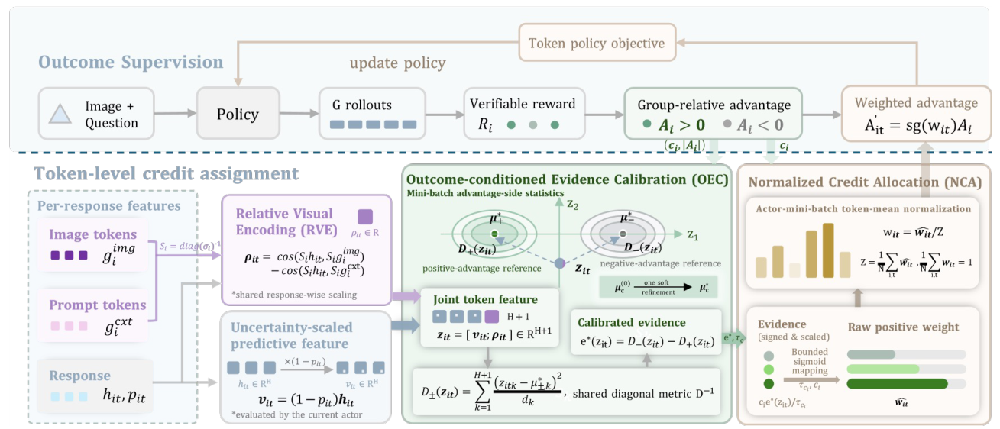
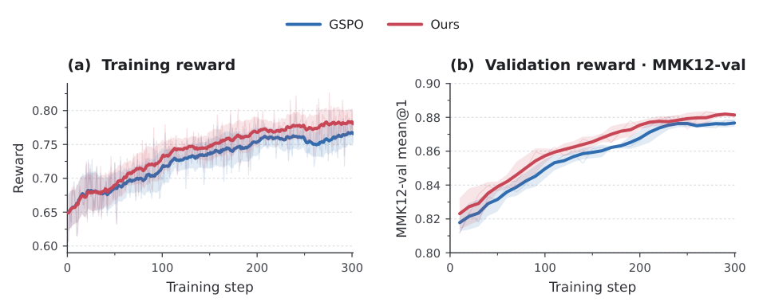

Affinity needs a reference.
A predictive state can align with both image representations and the prompt. Absolute image similarity alone does not isolate visual association relative to the surrounding context.
in Multimodal Reinforcement Learning
A visual connection is a measurement. How it should guide learning depends on the outcome. OVC connects the two with outcome-conditioned, token-level credit.
Swipe to inspect the full computational graph →
Six-task mean gain over GSPO
Qwen3-VL 4B / 8B · Qwen3.5 9B
At inference time
A multimodal response mixes observation, interpretation and reasoning. A single response-level advantage cannot say which part should receive a stronger update.
Q is 11 km due east of P. R is 8 km from P at a clockwise bearing of 025° from north. Find the distance QR.
A failed final answer does not localise the failure. The bearing observation may be valid even when the frame conversion or a later algebraic operation is wrong.
Constructed surveying example; feature coordinates in the replay are synthetic. Valid/error labels explain the example and are never inputs to the OVC estimator. Advantage signs reflect relative rewards, not token correctness.
A predictive state can align with both image representations and the prompt. Absolute image similarity alone does not isolate visual association relative to the surrounding context.
The same positive weight strengthens learning in a positive-advantage response and strengthens suppression in a negative-advantage response. An unconditional visual bonus ignores that difference.
OVC asks how features differ across advantage sides, relative to within-side variation. Visual association contributes evidence only through those observed outcome contrasts.
In the paper’s frozen-model analysis, image-affinity quartiles have accuracies of 80.2%, 77.8%, 82.2% and 79.8%. The highest-affinity group is not the most accurate. Context affinity also distinguishes outcome statistics among pairs approximately matched on image affinity.
Figure 1 · manuscript p. 2 ↗OVC is a detached credit estimator built on existing rollouts. It changes the strength of token updates while retaining the original advantage sign and GSPO sequence-level clipping.
Contrast image and non-image prompt affinity using the same response-wise diagonal scaling. The prompt prototype comes from the original multimodal input, not a second text-only forward.
No mean subtraction in the cosine. The same scaling is applied to the state and both prototypes.
Combine the relative visual coordinate with v = (1 − p)h, where p is the sampled token’s probability under the current actor. Compare the joint feature with positive- and negative-advantage reference means under a regularised diagonal within-side metric.
Advantage-magnitude-weighted statistics; one soft reference refinement. The metric and pre-refinement margin scales remain fixed.
Map signed evidence cᵢe(z) to positive raw weights. Normalize across all valid actor-mini-batch tokens, then multiply the response advantage by the detached token weight.
Global mean weight = 1. This preserves signs, not the norm of the resulting policy gradient. Zero-advantage tokens remain in the normalization.
Re-estimated over both sides of the actor mini-batch.
κ perturbs the synthetic visual–outcome association; it is not an OVC training hyperparameter. η controls variance shrinkage. Reference statistics, the metric and normalization are recomputed after each adjustment.
μ⁰c = ΣTc |Aᵢ| zᵢₜ / Mc → qk = Σc Var|A|,c(zk)
dk = max((1 − η)qk + ηq̄ + ε, rminq̄ + ε), q̄ = mean(q₁, …, qH)
u⁰ᵢₜ = σ(cᵢe⁰(zᵢₜ) / τcᵢ), μ*c = Σ |Aᵢ| u⁰ᵢₜ zᵢₜ / Σ |Aᵢ| u⁰ᵢₜ
All geometry, features and allocation curves here are computed from a synthetic H=32, B=8, T=24 batch, not extracted from a trained model. The estimator follows Eqs. (1)–(12), including response-wise scaling, advantage-magnitude reference weights, within-side diagonal variation, one refinement and global normalization. The paper’s 9B recipe uses H=4096. Conditional curves keep reference statistics and Z fixed; the batch charts recompute them. The affinity-ranked curve is an illustrative heuristic, not a reproduction of a named baseline. No accuracy trends or empirical results are simulated.
The actor is fixed between the five passes. Reference groups use the sign of group-relative advantage; the supplied reward mixes accuracy and format. These groups are not token-correctness labels. The estimator is diagonal, not a full-covariance model, and does not establish causal token attribution.
The derivation assumes both advantage sides have positive mass. If all rollout groups have constant rewards, advantages and the policy gradient are zero. The reported formulation concerns image-conditioned inputs.
Algorithm 1 · Appendix F ↗
The same instruction-tuned initialization, RL data and rollout configuration are shared within each model setting. Numbers below are reported in Table 1, averaged over four independent runs.
58.67 → 60.71
61.59 → 63.98
68.92 → 70.78
Six-benchmark arithmetic mean: GSPO → GSPO + OVC. Gains are percentage points, not relative percentages. The 9B model uses a different, larger training dataset.
| Method | MMMU | MathVision | We-Math | MathVista | MMK12-val | MathVerse | Average |
|---|---|---|---|---|---|---|---|
| Base | 48.78 | 24.67 | 80.23 | 74.40 | 64.46 | 62.84 | 59.23 |
| GSPO | 44.56 | 27.30 | 83.33 | 76.10 | 74.73 | 63.53 | 61.59 |
| DelTA | 49.21 | 24.01 | 85.40 | 77.03 | 77.06 | 64.82 | 62.92 |
| VPPO | 49.43 | 27.69 | 84.36 | 76.21 | 75.29 | 64.09 | 62.85 |
| AT-RL | OOM | ||||||
| GSPO + OVC | 49.56 | 29.93 | 83.45 | 76.97 | 78.94 | 65.05 | 63.98 |
The six-task mean improves for every evaluated backbone, but individual tasks do not all improve: on Qwen3.5-9B, MathVerse drops by 0.94 points versus GSPO. DelTA also remains stronger on 8B We-Math. OVC’s claim is a stronger overall average under the reported settings, not universal benchmark dominance.
In the manuscript’s Qwen3.5-9B run on Math77K, OVC generally achieves higher training reward and MMK12-val performance over the training trajectory. These are the original reported curves, not a reconstructed or simulated time series.
Figure 5 · manuscript p. 7 ↗
Averaging weights within each response loses 1.48 points. Permuting them loses 1.56 points, even though each response keeps exactly the same weight multiset. The gain depends on where the weights go.
Table 2 · Qwen3-VL-8B · Four-task mean, not the six-task average above. Full OVC: 63.85; GSPO: 62.57.
With within-side calibration, adding the visual coordinate raises the mean from 61.98 to 63.85. With an identity metric, it lowers the mean from 62.29 to 62.10. This interaction cautions against treating visual affinity as an independently beneficial bonus.
OVC adds no learnable head, auxiliary reward model or process annotations. Its additional computation is in detached training statistics, not in the inference graph.
of the measured training step spent on OVC-specific passes
Figure 4 reports a single complete training step. This is a share of total step time, not a universal slowdown or an inference-time overhead.
Derivations, evaluation protocols, complete ablations and the actor-update algorithm are in the manuscript and its supplement.
Yuhang Han; Dingning Liu; Yujie Chen; Yaojie Zhang; Jingwei Song; Zequn Yang; Xuanming Shang; Li Ding; Zhijiang Guo; Linfeng Zhang. From Visual Affinity to Learning Credit in Multimodal Reinforcement Learning. Research manuscript, 2026.
Author names and affiliations are supplied by the authors for this project page. The linked PDF retains its review-manuscript formatting; no publication venue, arXiv identifier or public code URL is asserted.